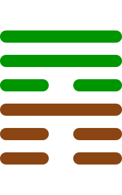

第五十三卦
渐卦

卦辞
女归吉，利贞。
渐卦象征渐进、渐次与逐步。卦辞意为：女归吉祥，利于坚守正道。渐卦教导我们要循序渐进，逐步发展。
彖传
渐之进也，女归吉也。进得位，往有功也。进以正，可以正邦也。其位刚，得中也。止而巽，动不穷也。
彖传说：渐之进也，女归吉也。进得位，往有功也。进以正，可以正邦也。其位刚，得中也。止而巽，动不穷也。
象传
山上有木，渐。君子以居贤德，善俗。
象传说：山上有木，就是渐卦。君子应当效法这种精神，居贤德，善俗。山上有木，象征渐进生长。
爻辞
初六：鸿渐于干，小子厉，有言，无咎
鸿渐于干，小子危险，有言语，无灾害。
初六爻位于最下方，鸿渐于干。鸿鸟渐进于干，小子危险，有言语，无咎，表示渐进的开始。
六二：鸿渐于磐，饮食衎衎，吉
鸿渐于磐，饮食衎衎，吉祥。
六二爻得中得正，鸿渐于磐。鸿鸟渐进于磐，饮食衎衎，吉，表示安居乐业。
九三：鸿渐于陆，夫征不复，妇孕不育，凶。利御寇
鸿渐于陆，夫征不复，妇孕不育，凶险。利于抵御盗寇。
九三爻位置不当，鸿渐于陆。鸿鸟渐进于陆，夫征不复，妇孕不育，凶。利御寇，表示渐进的困难。
六四：鸿渐于木，或得其桷，无咎
鸿渐于木，或得其桷，无灾害。
六四爻接近君位，鸿渐于木。鸿鸟渐进于木，或得其桷，无咎，表示找到栖息之所。
九五：鸿渐于陵，妇三岁不孕，终莫之胜，吉
鸿渐于陵，妇三岁不孕，终莫之胜，吉祥。
九五爻居中尊位，鸿渐于陵。鸿鸟渐进于陵，妇三岁不孕，终莫之胜，吉，表示渐进的成功。
上九：鸿渐于阿，其羽可用为仪，吉
鸿渐于阿，其羽可用为仪，吉祥。
上九爻位于极点，鸿渐于阿。鸿鸟渐进于阿，其羽可用为仪，吉，表示渐进的完成。